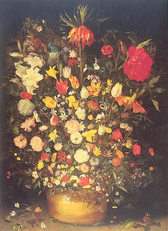
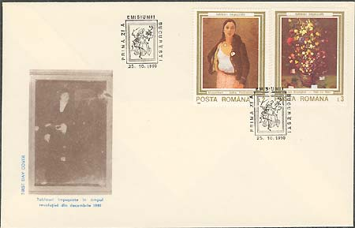

|
The National Museum of Art of Romania Flower Bouquet in a Vase |
Born in Brussels, Jan "Velvet" Brueghel (1568 - 1625) lost his famous father, Pieter, when he was only one year old. He received his initial training from his grandmother, Maria Bessemers, a miniaturist. Between 1590 and 1595 he was in Naples, Rome, and Milan under the patronage of Cardinal Federico Borromeo. In 1596 he returned to Antwerp where, a year later, he entered the artists' guild, of which he became dean (1602). In 1604 he visited Prague and in 1606 Nuremberg. Appointed court artist to Archduke Albert of Austria at Brussels in 1609, he also worked for Emperor Rudolf II and King Sigismund of Poland. His collaborators included Rubens, Frans Francken II, Rottenhammer, and Joos de Momper; Daniel Seghers was his pupil. Brueghel was famous for his brightly colored historical subjects, filled with tiny figures, and for his landscapes.

The name of Jan "Velvet" Brueghel is
also often associated with flower painting, a genre which he brilliantly
established in Flanders.
Velvet Brueghel's rich, sumptuous flower arrangements set in precious ceramic vases or in wooden tubs attest to a new monumental decorative approach, imbued with a refined, sensitive lyricism. The panel here
is a replica of the painting at the Kunsthistorisches Museum in Vienna,
currently considered to be the prototype. The bouquet consists of dozens of flowers
from every season, structured around the central axis formed by the stalk of the crown imperial, an exotic plant of the Fritillaria genus.

The ingeniously contrived composition creates a floral architecture in which overlap is skillfully avoided so as to insure the best angles and reveal the intricate vegetal forms. Every single flower, leaf or insect is depicted wicl1 the minute accuracy of a natural science scholar and stands out as an area of saturated color against the dark background.

In this gigantic herbal, Velvet Brueghel displays the entire range of his bright colors, precious hues being paired with the tones of basic colors, modeled by an interplay of warm light and shade. (After Maria Matache).
The stamp was issued on October 25, 1990, in a set of six stamps. The print run of the stamp was of 950,000 pieces. The whole set shows paintings that were hit by bullets in December 1989, during the popular uprising against the dictator Ceausescu and the communist regime. All stamps are labeled "tablouri impuscate" - shot paintings. Please click here in order to read more about this quite special set.
For some supplementary information please move the mouse pointer over the images.
| Published:
07/13/2002. Revised:
07/29/02. Copyright © 2002 by Victor Manta, Switzerland. All rights reserved worldwide. |